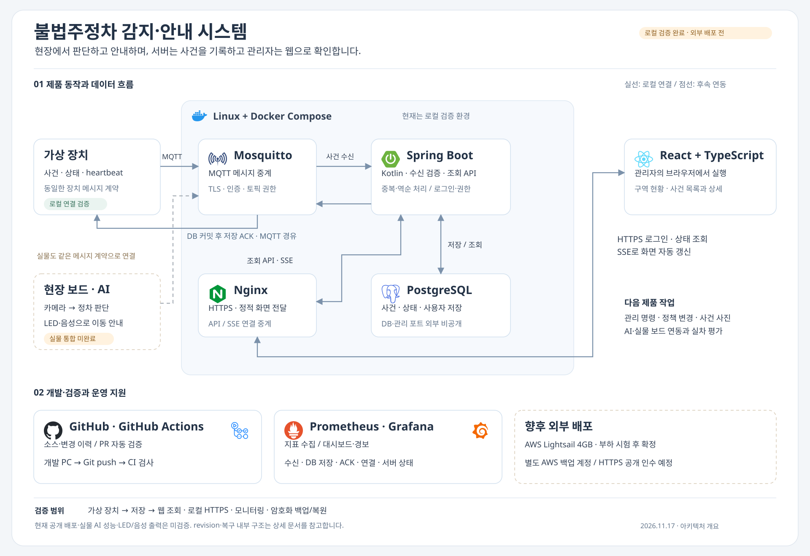

발표·블로그용 아키텍처 그림
2026-11-26 · 확정한 AWS 배포 목표와 현재 로컬 검증 범위를 구분한 설명용 그림

그림을 크게 열기 ↗사용할 파일
- PNG: README·블로그·슬라이드에 바로 삽입하는 1920 × 2300 이미지.
- SVG: 확대해도 선명한 벡터 파일. 텍스트·도형을 편집할 수 있으며 저장소의 수정 기준은 아래 생성 원본이다.
- PDF: 한 페이지 공유·인쇄본.


가운데 서버 영역은 AWS Lightsail 4GB에 배포할 목표 구성이다. 배포 방향은 확정했지만 실제 서버 생성·외부 접속·실서버 부하 검증은 아직 완료하지 않았다. 실선은 로컬에서 연결·검증한 경로, 점선은 아직 검증하지 않은 실물·외부 연결이다.
Prometheus·Grafana는 같은 서버에서 실행하고 관리 화면은 외부에 직접 공개하지 않는다. 암호화 백업과 독립 revision 기록은 서버 밖의 별도 AWS 계정 내 비공개 S3에 둔다. DuckDNS 주소는 아직 등록 전 후보이며, 그림에 표시한 주소가 현재 접속 가능한 서비스 주소는 아니다.
가상 장치의 사건은 MQTT → Spring Boot → PostgreSQL로 저장되며, DB 커밋 후 ACK는 MQTT를 거쳐 장치로 돌아간다. React는 관리자 브라우저에서 실행되고 Nginx가 정적 파일과 API·SSE 연결을 제공한다.
화면·배포의 모든 세부를 담은 그림은 아니다. revision·격리 복원·네트워크 상세는 아키텍처 설명, 운영 배포, 로컬 백업을 따른다. 실물 AI·LED/음성 출력·공개 배포 완료나 성능 측정의 증거로 사용하지 않는다. 캡처·실행 수치의 근거는 증거 모음에서 확인한다.
그림을 읽는 순서
- 개발과 배포: 개발 PC → GitHub → GitHub Actions의 CI → 배포 담당자 → AWS 서버. CI는 PR과 main 변경을 자동 검사한다. 현재 자동 배포 CD는 없고, 검사 통과가 서버 반영을 뜻하지 않는다. 담당자가 검증한 버전을 선택해 적용하는 첫 배포 목표를 점선으로 표시했다.
- Data·현장 안내: Data가 영상·정답을 AI 개발·평가에 전달하고, AI가 보드에서 판단해 LED·스피커를 제어한다. Data는 실시간 MQTT 발행 담당이 아니다. 새 출력은 SDK의 로컬 저장 완료 뒤 최신 조건을 재검사하며, 안전 중단·LED off는 저장 지연에도 우선한다. 서버 ACK와 물리 출력 성공은 구분한다.
- 서비스 이용: 가상 장치 또는 실물 보드 → Mosquitto → Spring Boot → PostgreSQL. 저장 응답은 반대로 돌아간다. 브라우저는 Nginx를 통해 로그인·조회·SSE를 사용한다.
- 운영 관측: 같은 서버의 앱·Linux·내부 HTTPS 지표 → Prometheus → Grafana → 운영자. 화살표는 지표/조회 결과의 데이터 방향이다. 요청은 Prometheus가 수집 대상에, Grafana가 Prometheus에 보낸다. 로컬 구성의 수집 간격은 15초다. 운영자는 SSH 터널로 관리 화면에 접근할 목표이며, 외부 알림과 서버 전체 장애를 확인할 외부 관측은 아직 미완료다.
- 백업과 복구: 서버의 암호화 백업 작업 → 별도 AWS 계정 S3 → 복구 담당자와 새 서버. 독립 revision은 백업 작업과 별도로 서버가 실시간 확인·갱신하는 기록이다. 그림은 이를 주석으로 구분하며, 세부 연결은 C4 배포 그림을 따른다.
색과 텍스트 배지는 개발 담당을 뜻한다. 보라색 Data, 주황색 AI·장치, 파란색 백엔드, 초록색 프론트, 회색 공동으로 구분한다. 보드의 저장·통신 SDK는 백엔드가 작성하고 AI 담당이 플랫폼 어댑터와 실제 보드에 결합한다. 색은 완료 여부가 아니며, 역할 기준 B1과 출력 규칙 B3를 유지한다.
아래 행의 ‘③ 서버’는 위 AWS 서버를 다시 가리키며 추가 서버가 아니다. 긴 교차선을 줄이면서 실행 위치를 설명하기 위한 표기다. 이 그림에서 외부 알림과 수동 배포는 목표 경로이며 이번 문서 수정으로 기능을 구현한 것은 아니다.
구현 근거: CI 워크플로, Prometheus 수집 설정, Grafana 데이터 소스, 서버 릴리스 준비 절차.
수정 가능한 원본
| 파일 | 수정·보존 내용 |
|---|---|
| build-overview.py | 문구·카드 좌표·색·아이콘·화살표. Python 표준 라이브러리로 SVG 생성 |
| 아이콘 출처와 목록 | 실제 사용한 로컬 SVG 아이콘과 CC0 라이선스. 재생성 중 다운로드하지 않음 |
| build.mjs | 기존 C4·문서 생성과 함께 개요 SVG 생성 |
| export-overview.mjs | 같은 SVG를 Chromium에서 PNG·PDF로 출력 |
그림의 선·라벨을 바꿀 때는 SVG 생성물을 직접 수정하지 않고 build-overview.py를 수정한다. 기존 C4 DOT 그림도 그대로 유지한다. 이 그림 추가로 통신 계약이나 시스템 책임을 변경하지 않았다.
재생성과 내보내기
저장소 루트에서 실행한다. 일반 문서 생성에는 Node.js 24와 Python 3만 필요하며, 문서 의존성을 설치한 후에는 네트워크 없이 실행할 수 있다.
npm --prefix tools/docs ci
npm --prefix tools/docs run build
그림을 변경했다면 PNG·PDF도 다시 출력한다. 아래 설치는 처음 한 번 필요하며, 이미 프론트 브라우저 검증 환경이 있으면 재설치하지 않아도 된다.
npm --prefix frontend ci
cd frontend
npx playwright install chromium
cd ..
node tools/docs/export-overview.mjs
python3 tools/check_structure.py
SVG·PNG·PDF와 변경한 원본을 함께 커밋한다. 기본 문서 생성은 SVG·HTML만 갱신하므로 PNG·PDF를 빠뜨리지 않는다. PNG·PDF는 실행 환경의 글꼴에 따라 모양이 달라질 수 있다. 승인 시안은 macOS의 Apple SD Gothic Neo를 사용했으며 다른 환경에서는 Noto Sans KR 등 한국어 글꼴을 준비한 뒤 글자 잘림·겹침과 한 페이지 출력을 확인한다. 글꼴 파일 자체는 저장소에 포함하지 않는다.
출처와 확인 범위
구조의 근거는 현재 구현 상태, 팀 아키텍처, 로컬 HTTPS Compose다. 첨부받은 참고 이미지의 밝은 배경·카드·기술 아이콘 표현을 참고해 프로젝트 구성에 맞게 작성했다. 참고 이미지 파일 자체는 저장소에 넣지 않는다.
브랜드 아이콘은 Simple Icons의 CC0 배포본이다. 아이콘 저작권 라이선스와 각 브랜드의 상표 사용 조건은 구분한다. 상세 파일 목록·해시는 아이콘 안내에 보존한다. 문서 그림을 추가한 작업이며 계정 생성·구매·외부 배포는 수행하지 않았다.